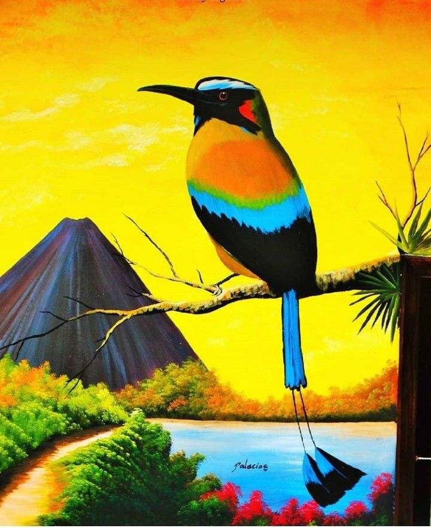
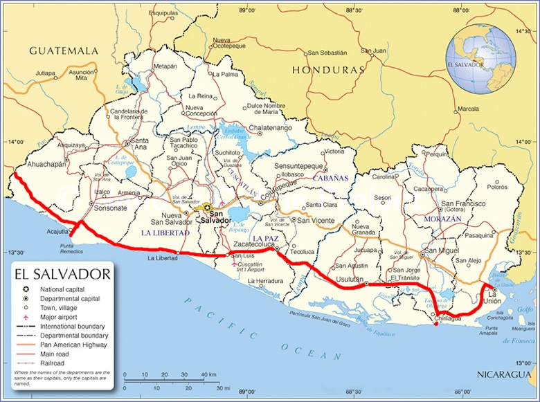
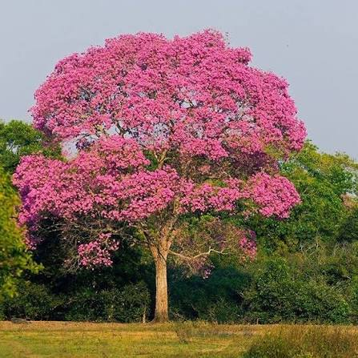
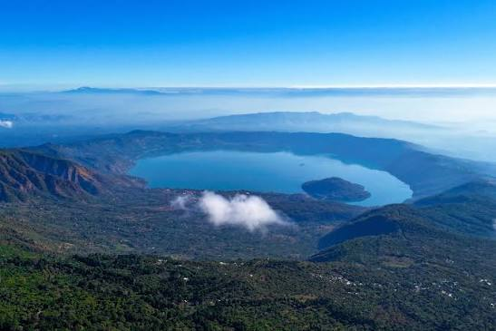

El Torogoz

Ave nacional declarada como tal por su singular belleza y variedad de colores.

Es el país más pequeño de América Central en superficie terrestre, conocido por sus volcanes y playas pacíficas.

Ave nacional declarada como tal por su singular belleza y variedad de colores.

Árbol nacional que se viste de flores rosadas durante los primeros meses del año.

Famosa playa reconocida internacionalmente por la práctica del surf y su vida nocturna.

Hermoso lago de origen volcánico ubicado en el departamento de Santa Ana.